Vous êtes l’un des survivants.
Quelque part dans l’est de l’Europe, au cœur d’une région oubliée du monde, vous tentez de reconstruire une existence au milieu des vestiges d’une civilisation disparue.
La fin du monde n’a pas eu lieu.
Elle a simplement changé de visage.
Nous sommes en 2032.
Dix années se sont écoulées depuis le début de la Troisième Guerre mondiale, un conflit qui a embrasé la planète entière et détruit tout ce que l’humanité croyait immuable.
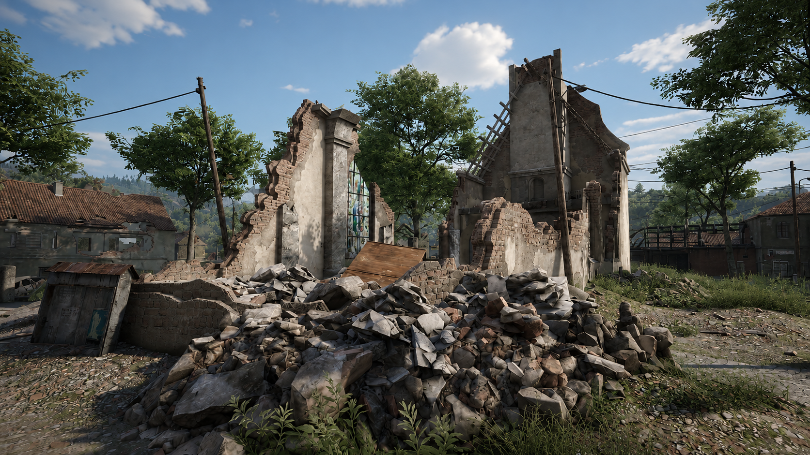
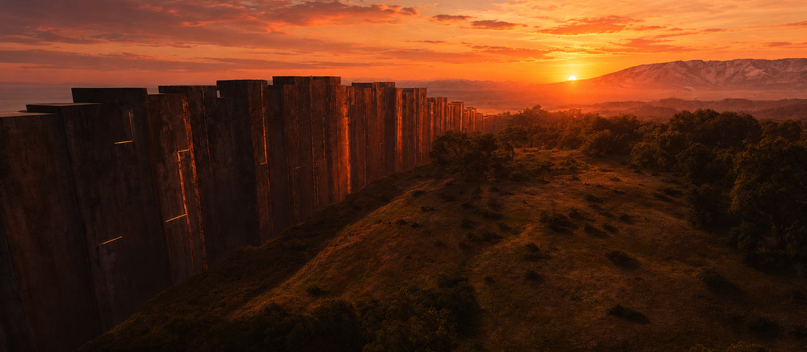
Les nations se sont effondrées les unes après les autres.
Les gouvernements ont disparu.
Les frontières ne sont plus de simples traits tracés sur d’anciennes cartes jaunies.
Elles sont devenues physiques.
Des lignes de béton et d’acier infranchissables dressées au milieu des terres.
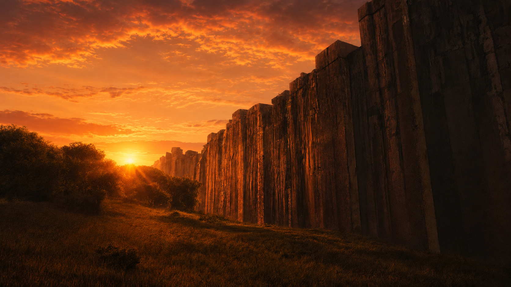
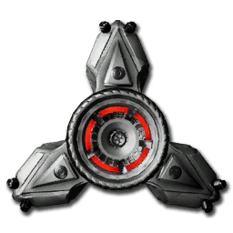
Pendant la guerre, chaque citoyen a dû se résoudre à accepter l’impensable :
le port d’une puce implantée chirurgicalement à l’arrière du crâne.
Impossible à retirer sans condamner son porteur, elle devait officiellement permettre de suivre les déplacements, compter les survivants, identifier les citoyens et maintenir un semblant d’ordre.
Lorsque les derniers tirs se sont finalement tus, il ne restait derrière eux qu’un continent meurtri, des villes éventrées et des millions de vies brisées.
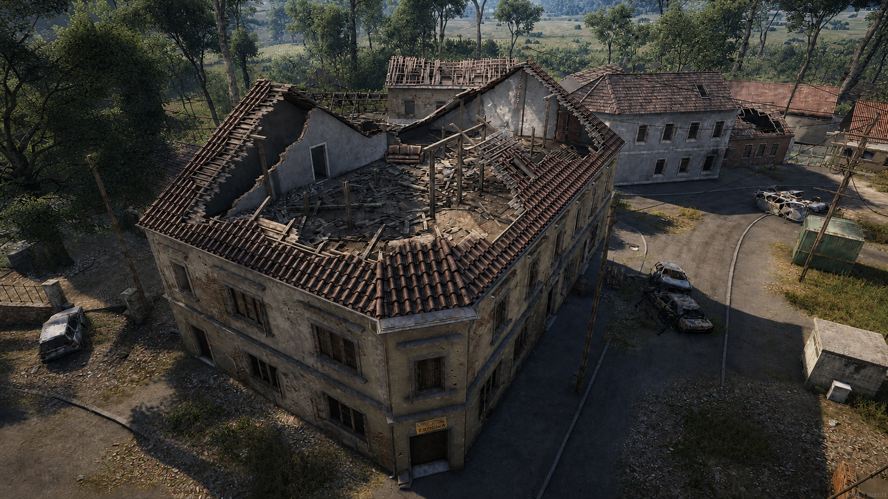
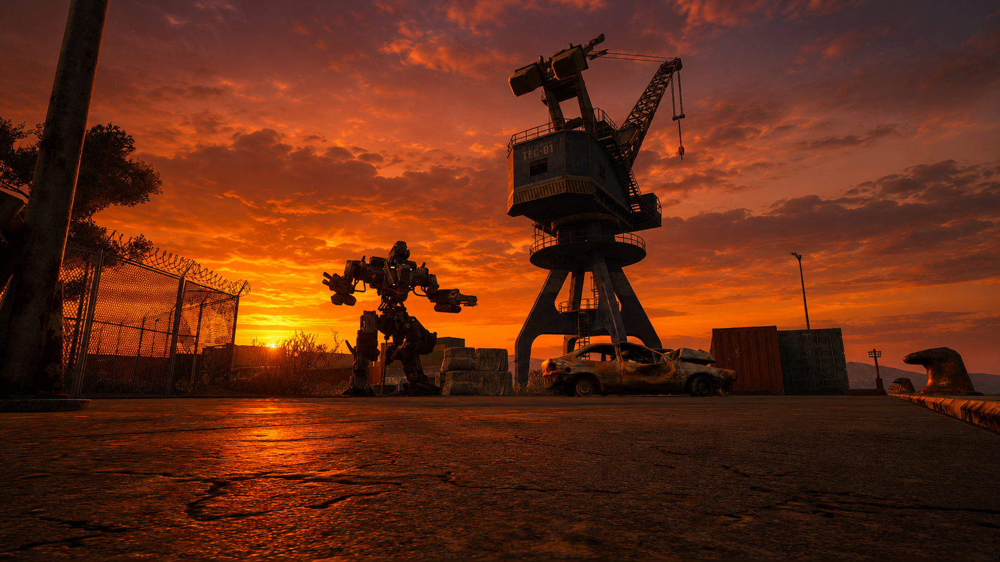
Dans certaines zones anciennement stratégiques, des robots autonomes continuent de patrouiller.
Ils protègent encore des lieux dont plus personne ne connaît vraiment l’importance, prêts à abattre quiconque franchit leur périmètre.
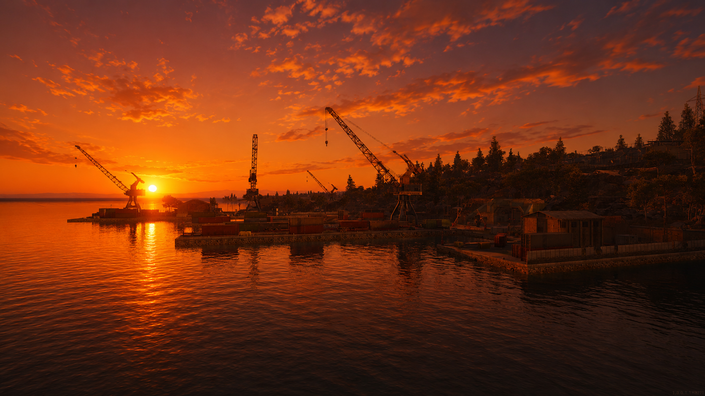
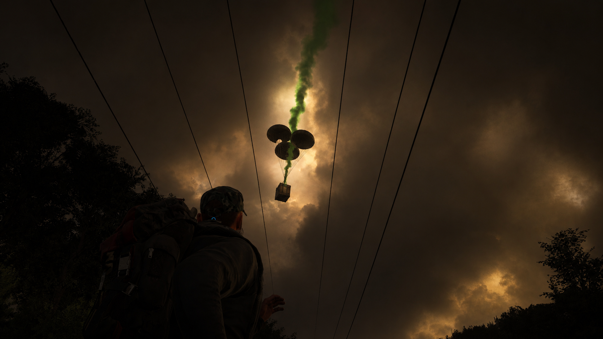
Ces machines semblent garder des fantômes. Pourtant, certains soirs, ce ne sont pas les fantômes qui percent le silence de la nuit... Mais des cargaisons larguées depuis le ciel.
…Abandonnées au milieu des terres, elles attirent survivants, pillards et opportunistes, donnant naissance à des rencontres aussi précieuses que dangereuses.
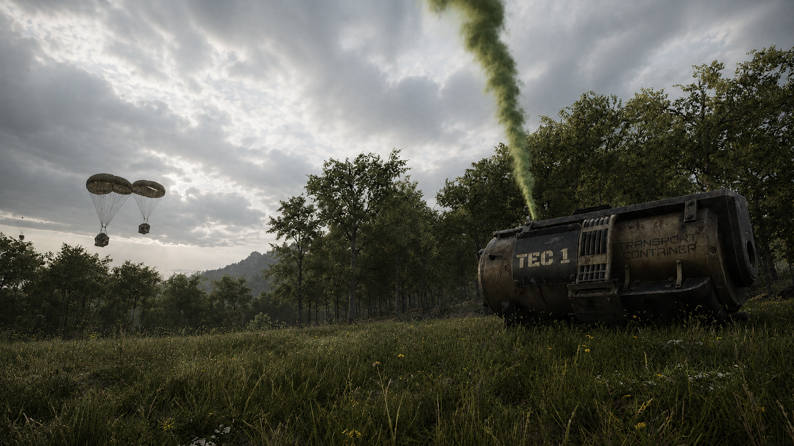
Quelque part dans l’est de l’Europe, au cœur d’une région oubliée du monde, vous tentez de reconstruire une existence au milieu des vestiges d’une civilisation disparue.
Certains vous croiseront pour échanger.
D’autres humains ne seront là que pour vous tuer.
Chaque balle, chaque repas est précieux.
Une rencontre, un échange ou décision ..
Peut réellement changer votre destin.
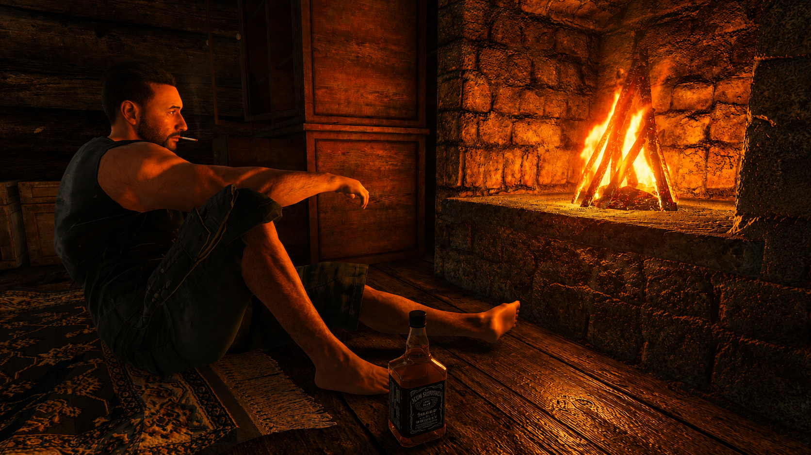
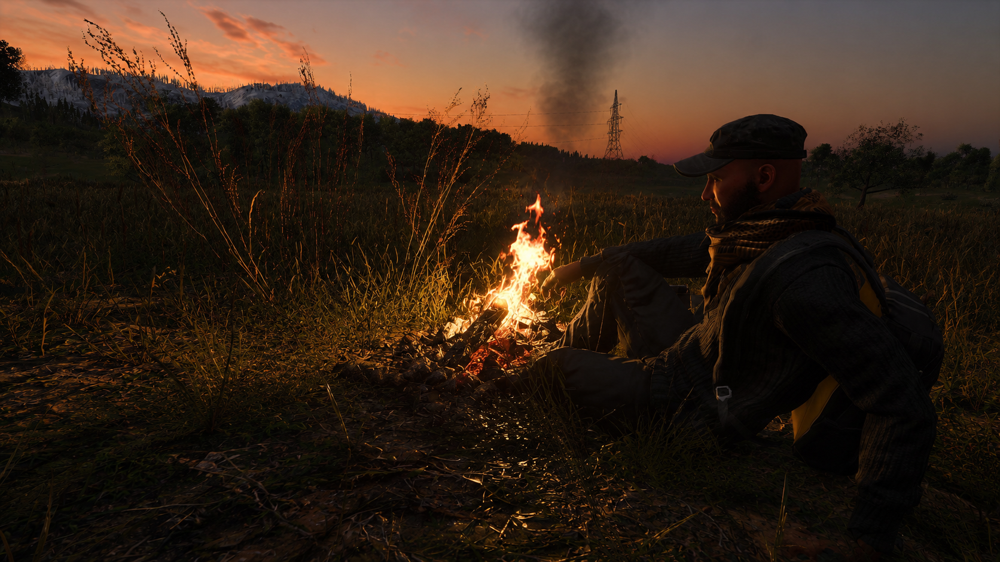
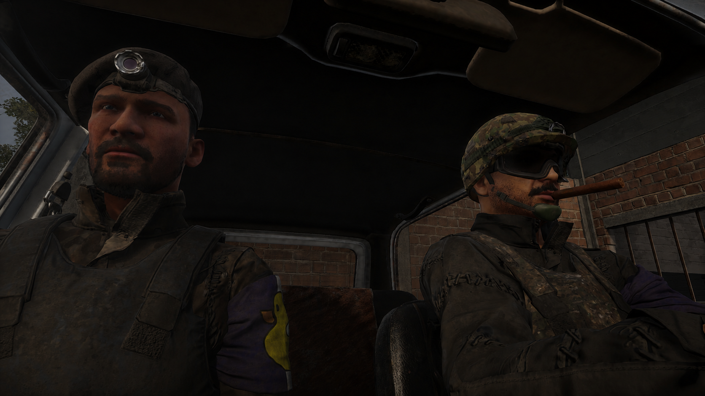
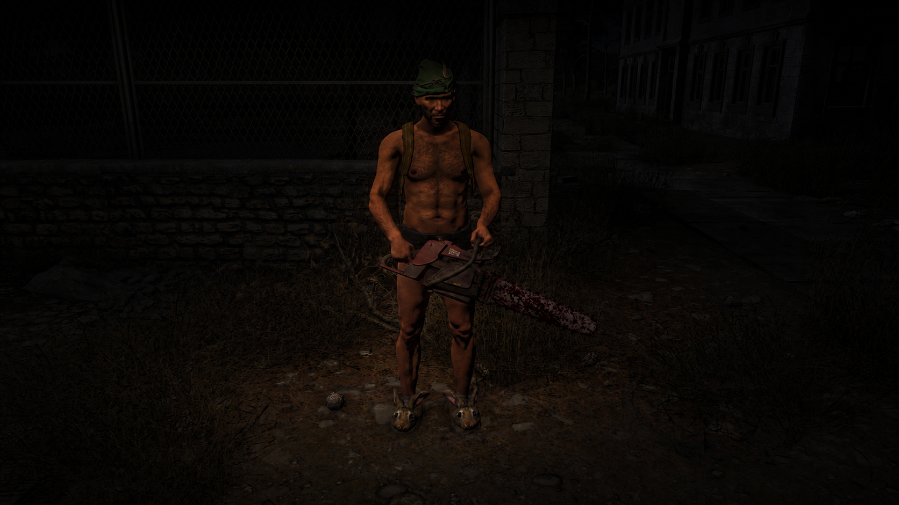
Au milieu des ruines, des communautés se forment.
Les Traders sont là pour faire du profit, pas pour enrichir les survivants.
Cependant, ils constituent souvent le moyen le plus rapide d'obtenir certaines ressources rares,
pour peu que vous ayez l'argent nécessaire.
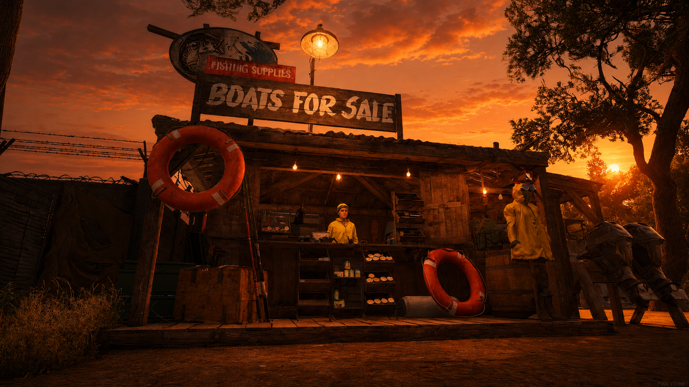
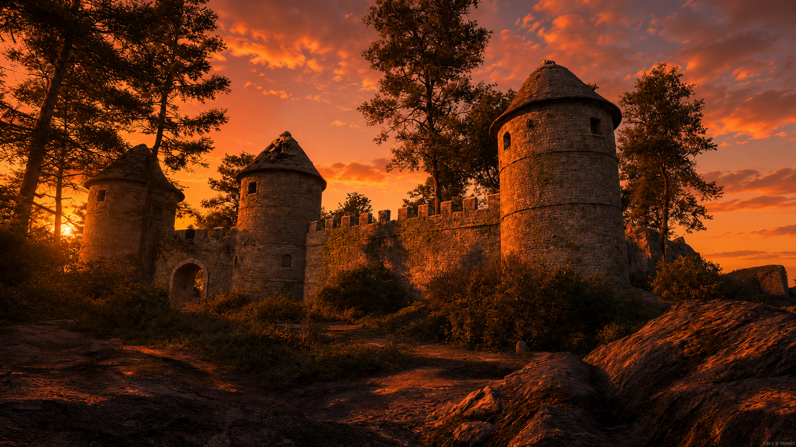
De nouvelles communautés émergeront sans doute avec le temps.
Elles favoriseront des échanges plus équitables et bénéfiques pour tous.
Du moins, c'est ce que beaucoup espèrent encore...
Et pourtant, des aventuriers continuent d’explorer les vestiges du passé à la recherche de ressources, de véhicules, d’informations… et peut-être de réponses.
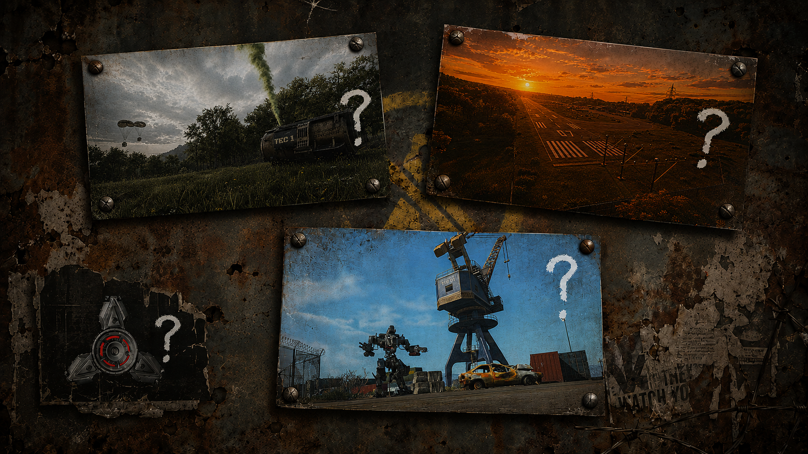
Les puces servent-elles encore à quelque chose ?
Qui contrôle les robots ?
Qui organise les largages ?
Et pourquoi des hommes armés tirent-ils à vue sur ceux qui n’ont déjà plus rien ?
Les réponses existent peut-être encore quelque part.
Dans un bunker verrouillé.
Dans une base abandonnée.
Dans la mémoire d’un survivant…
qui n’en est peut-être déjà plus vraiment un.
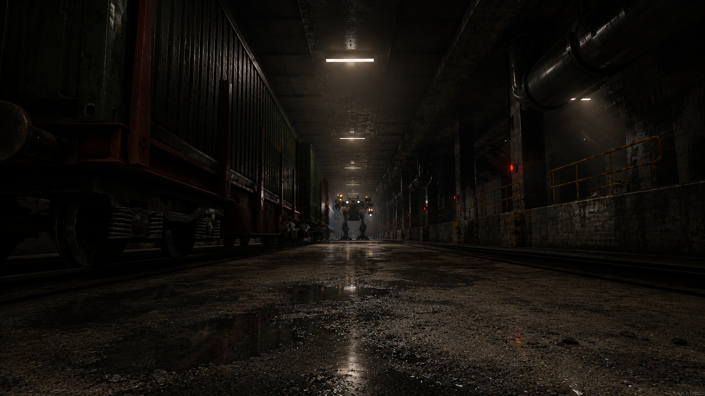
Dans ce nouveau monde, votre histoire vous appartient.
Serez-vous un simple survivant ?
Un marchand influent ?
Un chef de faction ?
Un bandit redouté ?
Ou celui qui contribuera à rebâtir ce qui a été perdu ?
La guerre est terminée.
La survie, elle, ne fait que commencer.
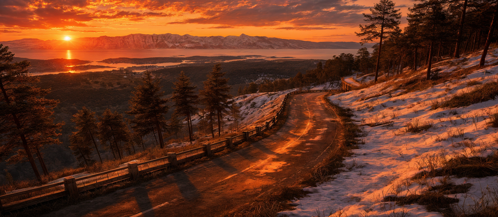